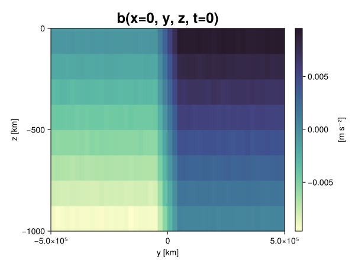
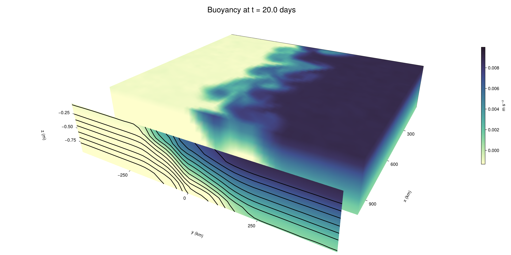

Baroclinic adjustment
In this example, we simulate the evolution and equilibration of a baroclinically unstable front.
Install dependencies
First let's make sure we have all required packages installed.
using Pkg
pkg"add Oceananigans, CairoMakie"using Oceananigans
using Oceananigans.UnitsGrid
We use a three-dimensional channel that is periodic in the x direction:
Lx = 1000kilometers # east-west extent [m]
Ly = 1000kilometers # north-south extent [m]
Lz = 1kilometers # depth [m]
grid = RectilinearGrid(size = (48, 48, 8),
x = (0, Lx),
y = (-Ly/2, Ly/2),
z = (-Lz, 0),
topology = (Periodic, Bounded, Bounded))48×48×8 RectilinearGrid{Float64, Periodic, Bounded, Bounded} on CPU with 3×3×3 halo
├── Periodic x ∈ [0.0, 1.0e6) regularly spaced with Δx=20833.3
├── Bounded y ∈ [-500000.0, 500000.0] regularly spaced with Δy=20833.3
└── Bounded z ∈ [-1000.0, 0.0] regularly spaced with Δz=125.0Model
We built a HydrostaticFreeSurfaceModel with an ImplicitFreeSurface solver. Regarding Coriolis, we use a beta-plane centered at 45° South.
model = HydrostaticFreeSurfaceModel(; grid,
coriolis = BetaPlane(latitude = -45),
buoyancy = BuoyancyTracer(),
tracers = :b,
momentum_advection = WENO(),
tracer_advection = WENO())HydrostaticFreeSurfaceModel{CPU, RectilinearGrid}(time = 0 seconds, iteration = 0)
├── grid: 48×48×8 RectilinearGrid{Float64, Periodic, Bounded, Bounded} on CPU with 3×3×3 halo
├── timestepper: QuasiAdamsBashforth2TimeStepper
├── tracers: b
├── closure: Nothing
├── buoyancy: BuoyancyTracer with ĝ = NegativeZDirection()
├── free surface: ImplicitFreeSurface with gravitational acceleration 9.80665 m s⁻²
│ └── solver: FFTImplicitFreeSurfaceSolver
├── advection scheme:
│ ├── momentum: WENO reconstruction order 5
│ └── b: WENO reconstruction order 5
└── coriolis: BetaPlane{Float64}We start our simulation from rest with a baroclinically unstable buoyancy distribution. We use ramp(y, Δy), defined below, to specify a front with width Δy and horizontal buoyancy gradient M². We impose the front on top of a vertical buoyancy gradient N² and a bit of noise.
"""
ramp(y, Δy)
Linear ramp from 0 to 1 between -Δy/2 and +Δy/2.
For example:
```
y < -Δy/2 => ramp = 0
-Δy/2 < y < -Δy/2 => ramp = y / Δy
y > Δy/2 => ramp = 1
```
"""
ramp(y, Δy) = min(max(0, y/Δy + 1/2), 1)
N² = 1e-5 # [s⁻²] buoyancy frequency / stratification
M² = 1e-7 # [s⁻²] horizontal buoyancy gradient
Δy = 100kilometers # width of the region of the front
Δb = Δy * M² # buoyancy jump associated with the front
ϵb = 1e-2 * Δb # noise amplitude
bᵢ(x, y, z) = N² * z + Δb * ramp(y, Δy) + ϵb * randn()
set!(model, b=bᵢ)Let's visualize the initial buoyancy distribution.
using CairoMakie
# Build coordinates with units of kilometers
x, y, z = 1e-3 .* nodes(grid, (Center(), Center(), Center()))
b = model.tracers.b
fig, ax, hm = heatmap(view(b, 1, :, :),
colormap = :deep,
axis = (xlabel = "y [km]",
ylabel = "z [km]",
title = "b(x=0, y, z, t=0)",
titlesize = 24))
Colorbar(fig[1, 2], hm, label = "[m s⁻²]")
fig
Simulation
Now let's build a Simulation.
simulation = Simulation(model, Δt=20minutes, stop_time=20days)Simulation of HydrostaticFreeSurfaceModel{CPU, RectilinearGrid}(time = 0 seconds, iteration = 0)
├── Next time step: 20 minutes
├── Elapsed wall time: 0 seconds
├── Wall time per iteration: NaN days
├── Stop time: 20 days
├── Stop iteration : Inf
├── Wall time limit: Inf
├── Callbacks: OrderedDict with 4 entries:
│ ├── stop_time_exceeded => Callback of stop_time_exceeded on IterationInterval(1)
│ ├── stop_iteration_exceeded => Callback of stop_iteration_exceeded on IterationInterval(1)
│ ├── wall_time_limit_exceeded => Callback of wall_time_limit_exceeded on IterationInterval(1)
│ └── nan_checker => Callback of NaNChecker for u on IterationInterval(100)
├── Output writers: OrderedDict with no entries
└── Diagnostics: OrderedDict with no entriesWe add a TimeStepWizard callback to adapt the simulation's time-step,
conjure_time_step_wizard!(simulation, IterationInterval(20), cfl=0.2, max_Δt=20minutes)Also, we add a callback to print a message about how the simulation is going,
using Printf
wall_clock = Ref(time_ns())
function print_progress(sim)
u, v, w = model.velocities
progress = 100 * (time(sim) / sim.stop_time)
elapsed = (time_ns() - wall_clock[]) / 1e9
@printf("[%05.2f%%] i: %d, t: %s, wall time: %s, max(u): (%6.3e, %6.3e, %6.3e) m/s, next Δt: %s\n",
progress, iteration(sim), prettytime(sim), prettytime(elapsed),
maximum(abs, u), maximum(abs, v), maximum(abs, w), prettytime(sim.Δt))
wall_clock[] = time_ns()
return nothing
end
add_callback!(simulation, print_progress, IterationInterval(100))Diagnostics/Output
Here, we save the buoyancy, $b$, at the edges of our domain as well as the zonal ($x$) average of buoyancy.
u, v, w = model.velocities
ζ = ∂x(v) - ∂y(u)
B = Average(b, dims=1)
U = Average(u, dims=1)
V = Average(v, dims=1)
filename = "baroclinic_adjustment"
save_fields_interval = 0.5day
slicers = (east = (grid.Nx, :, :),
north = (:, grid.Ny, :),
bottom = (:, :, 1),
top = (:, :, grid.Nz))
for side in keys(slicers)
indices = slicers[side]
simulation.output_writers[side] = JLD2OutputWriter(model, (; b, ζ);
filename = filename * "_$(side)_slice",
schedule = TimeInterval(save_fields_interval),
overwrite_existing = true,
indices)
end
simulation.output_writers[:zonal] = JLD2OutputWriter(model, (; b=B, u=U, v=V);
filename = filename * "_zonal_average",
schedule = TimeInterval(save_fields_interval),
overwrite_existing = true)JLD2OutputWriter scheduled on TimeInterval(12 hours):
├── filepath: ./baroclinic_adjustment_zonal_average.jld2
├── 3 outputs: (b, u, v)
├── array type: Array{Float64}
├── including: [:grid, :coriolis, :buoyancy, :closure]
├── file_splitting: NoFileSplitting
└── file size: 30.7 KiBNow we're ready to run.
@info "Running the simulation..."
run!(simulation)
@info "Simulation completed in " * prettytime(simulation.run_wall_time)[ Info: Running the simulation...
[ Info: Initializing simulation...
[00.00%] i: 0, t: 0 seconds, wall time: 22.580 seconds, max(u): (0.000e+00, 0.000e+00, 0.000e+00) m/s, next Δt: 20 minutes
[ Info: ... simulation initialization complete (24.721 seconds)
[ Info: Executing initial time step...
[ Info: ... initial time step complete (18.926 seconds).
[06.94%] i: 100, t: 1.389 days, wall time: 34.204 seconds, max(u): (1.308e-01, 1.157e-01, 1.599e-03) m/s, next Δt: 20 minutes
[13.89%] i: 200, t: 2.778 days, wall time: 927.714 ms, max(u): (2.151e-01, 1.635e-01, 1.741e-03) m/s, next Δt: 20 minutes
[20.83%] i: 300, t: 4.167 days, wall time: 1.028 seconds, max(u): (2.826e-01, 2.107e-01, 1.613e-03) m/s, next Δt: 20 minutes
[27.78%] i: 400, t: 5.556 days, wall time: 869.131 ms, max(u): (3.558e-01, 3.056e-01, 1.548e-03) m/s, next Δt: 20 minutes
[34.72%] i: 500, t: 6.944 days, wall time: 904.995 ms, max(u): (4.252e-01, 4.333e-01, 1.657e-03) m/s, next Δt: 20 minutes
[41.67%] i: 600, t: 8.333 days, wall time: 943.169 ms, max(u): (5.261e-01, 6.010e-01, 2.042e-03) m/s, next Δt: 20 minutes
[48.61%] i: 700, t: 9.722 days, wall time: 911.880 ms, max(u): (7.264e-01, 9.190e-01, 2.534e-03) m/s, next Δt: 20 minutes
[55.56%] i: 800, t: 11.111 days, wall time: 950.059 ms, max(u): (1.128e+00, 1.229e+00, 3.583e-03) m/s, next Δt: 20 minutes
[62.50%] i: 900, t: 12.500 days, wall time: 896.169 ms, max(u): (1.206e+00, 1.157e+00, 4.065e-03) m/s, next Δt: 20 minutes
[69.44%] i: 1000, t: 13.889 days, wall time: 1.049 seconds, max(u): (1.534e+00, 1.154e+00, 4.151e-03) m/s, next Δt: 20 minutes
[76.39%] i: 1100, t: 15.278 days, wall time: 1.001 seconds, max(u): (1.342e+00, 1.124e+00, 3.470e-03) m/s, next Δt: 20 minutes
[83.33%] i: 1200, t: 16.667 days, wall time: 960.485 ms, max(u): (1.393e+00, 1.042e+00, 3.756e-03) m/s, next Δt: 20 minutes
[90.28%] i: 1300, t: 18.056 days, wall time: 972.178 ms, max(u): (1.412e+00, 9.949e-01, 2.614e-03) m/s, next Δt: 20 minutes
[97.22%] i: 1400, t: 19.444 days, wall time: 904.028 ms, max(u): (1.220e+00, 1.133e+00, 2.956e-03) m/s, next Δt: 20 minutes
[ Info: Simulation is stopping after running for 1.005 minutes.
[ Info: Simulation time 20 days equals or exceeds stop time 20 days.
[ Info: Simulation completed in 1.005 minutes
Visualization
All that's left is to make a pretty movie. Actually, we make two visualizations here. First, we illustrate how to make a 3D visualization with Makie's Axis3 and Makie.surface. Then we make a movie in 2D. We use CairoMakie in this example, but note that using GLMakie is more convenient on a system with OpenGL, as figures will be displayed on the screen.
using CairoMakieThree-dimensional visualization
We load the saved buoyancy output on the top, north, and east surface as FieldTimeSerieses.
filename = "baroclinic_adjustment"
sides = keys(slicers)
slice_filenames = NamedTuple(side => filename * "_$(side)_slice.jld2" for side in sides)
b_timeserieses = (east = FieldTimeSeries(slice_filenames.east, "b"),
north = FieldTimeSeries(slice_filenames.north, "b"),
top = FieldTimeSeries(slice_filenames.top, "b"))
B_timeseries = FieldTimeSeries(filename * "_zonal_average.jld2", "b")
times = B_timeseries.times
grid = B_timeseries.grid48×48×8 RectilinearGrid{Float64, Periodic, Bounded, Bounded} on CPU with 3×3×3 halo
├── Periodic x ∈ [0.0, 1.0e6) regularly spaced with Δx=20833.3
├── Bounded y ∈ [-500000.0, 500000.0] regularly spaced with Δy=20833.3
└── Bounded z ∈ [-1000.0, 0.0] regularly spaced with Δz=125.0We build the coordinates. We rescale horizontal coordinates to kilometers.
xb, yb, zb = nodes(b_timeserieses.east)
xb = xb ./ 1e3 # convert m -> km
yb = yb ./ 1e3 # convert m -> km
Nx, Ny, Nz = size(grid)
x_xz = repeat(x, 1, Nz)
y_xz_north = y[end] * ones(Nx, Nz)
z_xz = repeat(reshape(z, 1, Nz), Nx, 1)
x_yz_east = x[end] * ones(Ny, Nz)
y_yz = repeat(y, 1, Nz)
z_yz = repeat(reshape(z, 1, Nz), grid.Ny, 1)
x_xy = x
y_xy = y
z_xy_top = z[end] * ones(grid.Nx, grid.Ny)Then we create a 3D axis. We use zonal_slice_displacement to control where the plot of the instantaneous zonal average flow is located.
fig = Figure(size = (1600, 800))
zonal_slice_displacement = 1.2
ax = Axis3(fig[2, 1],
aspect=(1, 1, 1/5),
xlabel = "x (km)",
ylabel = "y (km)",
zlabel = "z (m)",
xlabeloffset = 100,
ylabeloffset = 100,
zlabeloffset = 100,
limits = ((x[1], zonal_slice_displacement * x[end]), (y[1], y[end]), (z[1], z[end])),
elevation = 0.45,
azimuth = 6.8,
xspinesvisible = false,
zgridvisible = false,
protrusions = 40,
perspectiveness = 0.7)Axis3()We use data from the final savepoint for the 3D plot. Note that this plot can easily be animated by using Makie's Observable. To dive into Observables, check out Makie.jl's Documentation.
n = length(times)41Now let's make a 3D plot of the buoyancy and in front of it we'll use the zonally-averaged output to plot the instantaneous zonal-average of the buoyancy.
b_slices = (east = interior(b_timeserieses.east[n], 1, :, :),
north = interior(b_timeserieses.north[n], :, 1, :),
top = interior(b_timeserieses.top[n], :, :, 1))
# Zonally-averaged buoyancy
B = interior(B_timeseries[n], 1, :, :)
clims = 1.1 .* extrema(b_timeserieses.top[n][:])
kwargs = (colorrange=clims, colormap=:deep, shading=NoShading)
surface!(ax, x_yz_east, y_yz, z_yz; color = b_slices.east, kwargs...)
surface!(ax, x_xz, y_xz_north, z_xz; color = b_slices.north, kwargs...)
surface!(ax, x_xy, y_xy, z_xy_top; color = b_slices.top, kwargs...)
sf = surface!(ax, zonal_slice_displacement .* x_yz_east, y_yz, z_yz; color = B, kwargs...)
contour!(ax, y, z, B; transformation = (:yz, zonal_slice_displacement * x[end]),
levels = 15, linewidth = 2, color = :black)
Colorbar(fig[2, 2], sf, label = "m s⁻²", height = Relative(0.4), tellheight=false)
title = "Buoyancy at t = " * string(round(times[n] / day, digits=1)) * " days"
fig[1, 1:2] = Label(fig, title; fontsize = 24, tellwidth = false, padding = (0, 0, -120, 0))
rowgap!(fig.layout, 1, Relative(-0.2))
colgap!(fig.layout, 1, Relative(-0.1))
save("baroclinic_adjustment_3d.png", fig)
Two-dimensional movie
We make a 2D movie that shows buoyancy $b$ and vertical vorticity $ζ$ at the surface, as well as the zonally-averaged zonal and meridional velocities $U$ and $V$ in the $(y, z)$ plane. First we load the FieldTimeSeries and extract the additional coordinates we'll need for plotting
ζ_timeseries = FieldTimeSeries(slice_filenames.top, "ζ")
U_timeseries = FieldTimeSeries(filename * "_zonal_average.jld2", "u")
B_timeseries = FieldTimeSeries(filename * "_zonal_average.jld2", "b")
V_timeseries = FieldTimeSeries(filename * "_zonal_average.jld2", "v")
xζ, yζ, zζ = nodes(ζ_timeseries)
yv = ynodes(V_timeseries)
xζ = xζ ./ 1e3 # convert m -> km
yζ = yζ ./ 1e3 # convert m -> km
yv = yv ./ 1e3 # convert m -> km49-element Vector{Float64}:
-500.0
-479.1666666666667
-458.3333333333333
-437.5
-416.6666666666667
-395.8333333333333
-375.0
-354.1666666666667
-333.3333333333333
-312.5
-291.6666666666667
-270.8333333333333
-250.0
-229.16666666666666
-208.33333333333334
-187.5
-166.66666666666666
-145.83333333333334
-125.0
-104.16666666666667
-83.33333333333333
-62.5
-41.666666666666664
-20.833333333333332
0.0
20.833333333333332
41.666666666666664
62.5
83.33333333333333
104.16666666666667
125.0
145.83333333333334
166.66666666666666
187.5
208.33333333333334
229.16666666666666
250.0
270.8333333333333
291.6666666666667
312.5
333.3333333333333
354.1666666666667
375.0
395.8333333333333
416.6666666666667
437.5
458.3333333333333
479.1666666666667
500.0Next, we set up a plot with 4 panels. The top panels are large and square, while the bottom panels get a reduced aspect ratio through rowsize!.
set_theme!(Theme(fontsize=24))
fig = Figure(size=(1800, 1000))
axb = Axis(fig[1, 2], xlabel="x (km)", ylabel="y (km)", aspect=1)
axζ = Axis(fig[1, 3], xlabel="x (km)", ylabel="y (km)", aspect=1, yaxisposition=:right)
axu = Axis(fig[2, 2], xlabel="y (km)", ylabel="z (m)")
axv = Axis(fig[2, 3], xlabel="y (km)", ylabel="z (m)", yaxisposition=:right)
rowsize!(fig.layout, 2, Relative(0.3))To prepare a plot for animation, we index the timeseries with an Observable,
n = Observable(1)
b_top = @lift interior(b_timeserieses.top[$n], :, :, 1)
ζ_top = @lift interior(ζ_timeseries[$n], :, :, 1)
U = @lift interior(U_timeseries[$n], 1, :, :)
V = @lift interior(V_timeseries[$n], 1, :, :)
B = @lift interior(B_timeseries[$n], 1, :, :)Observable([-0.009370833172882552 -0.00810463895940545 -0.006874423230571888 -0.005606645708589907 -0.004329717207427819 -0.003118994269975539 -0.001861998127943081 -0.0006296422120324179; -0.00936867174455124 -0.008096997191157931 -0.006883418916743742 -0.00563712528802382 -0.004379233120117942 -0.0031426138847855506 -0.0018727109184848432 -0.0006193742271656447; -0.009390261149777602 -0.008115488935434933 -0.006890875903735071 -0.005622956211881978 -0.0043595540300760014 -0.0031225326152072787 -0.0018733097478522119 -0.0006265951331570815; -0.009381542961391326 -0.008128053644839922 -0.006896598263850921 -0.005627860669156245 -0.004373278534124933 -0.0031289017919856536 -0.0018740421579518552 -0.0006355698604619572; -0.009371870557899219 -0.00811906915025659 -0.006866227850480775 -0.005626341890013904 -0.004380350227501059 -0.0031283746722103544 -0.0018804717720007896 -0.0006337700536975557; -0.009345660982603674 -0.008132743251990569 -0.006893633361436367 -0.005622511831563302 -0.004369813279439128 -0.0031434273215312993 -0.0018754686922827215 -0.0006492650923066527; -0.009368666628062877 -0.008134315910630853 -0.006872938592415333 -0.005628668735485676 -0.004373078373398753 -0.0031214679963697564 -0.0018899908730654665 -0.0006246596049573138; -0.009378862047978826 -0.008109111327206103 -0.006878174150220527 -0.005624745664607721 -0.004367414725698306 -0.0031120460397081177 -0.001912767427040379 -0.0006315796939365029; -0.009379434848907965 -0.008110968533125255 -0.0068736523164610016 -0.005621699545731901 -0.004371338262572481 -0.0031337226620627074 -0.0018864654822557958 -0.0006183525030777764; -0.00937148357147102 -0.008117061888095694 -0.006882766034805855 -0.005636033162511774 -0.004377713207996831 -0.003143763437979863 -0.0018607007536368305 -0.0006402204787309723; -0.009367749477399332 -0.008109498087927115 -0.006875043501737549 -0.005631066143089096 -0.004383350838281155 -0.003108874490034401 -0.0018552210522574583 -0.0006271666464690552; -0.009364824507853167 -0.00813157858103057 -0.006888015473256096 -0.005623145698670703 -0.0043693216698364595 -0.0031333343604550423 -0.0018870026796973553 -0.0006406158837327345; -0.009389884454149067 -0.008110981407729046 -0.006862922167378837 -0.005636894078033325 -0.004407964575985898 -0.003121809892785196 -0.0018810368925626852 -0.0006054538191953169; -0.00937528932844415 -0.008133125270907907 -0.006854858767943614 -0.005627707211357569 -0.0043742517465875505 -0.0031237485610358926 -0.0018802967772773831 -0.0006282490838024346; -0.009366497244362912 -0.008087033884677151 -0.006885137501209132 -0.005621536152741133 -0.00436883390701365 -0.0031373010924322653 -0.001876349016908756 -0.0006312186895515126; -0.009377813674803712 -0.00813798639050553 -0.0068843207253569405 -0.005632524622413183 -0.004365373651556141 -0.0031265627007854937 -0.0018812075551199875 -0.0006356653702385277; -0.009362052072815352 -0.008114989405108325 -0.006875749158043026 -0.005631277698287559 -0.004391318771331119 -0.00317242738104691 -0.001867343695597275 -0.0006088978662544941; -0.009392499330706792 -0.008102185153469148 -0.006886773613310418 -0.005626472474794332 -0.004365965333600835 -0.003127263260594808 -0.0018757573696890292 -0.0006214802858474972; -0.009346846996909512 -0.008111860180772049 -0.006874794953210979 -0.005624151265549767 -0.0043636204314027515 -0.003139122357927388 -0.0018790840227744393 -0.0006128315751252749; -0.009363228076072849 -0.008122152535103325 -0.006855228235718119 -0.005613180842683872 -0.004393604232314625 -0.0031233431098891627 -0.0018864084764170692 -0.0006315058733031404; -0.00938001695088781 -0.008119677889151057 -0.006879048953089571 -0.005615243375000828 -0.004350134909918678 -0.0031027427396675116 -0.0018704038005406265 -0.0006432849872076942; -0.009385700957351402 -0.00811440879975627 -0.006895914556669633 -0.005616451118052183 -0.004367109816874539 -0.003120734436216785 -0.0018705603177863774 -0.0006368842607372692; -0.007476449659986814 -0.006238793551167065 -0.005027401118228533 -0.003762348736282369 -0.0025123360496848335 -0.0012363978992388095 -6.706246233763782e-6 0.0012577485716645685; -0.005414051969817327 -0.004160912890892813 -0.0029240992281880083 -0.0016751906816784973 -0.00044150195060918356 0.000822008444483806 0.0021118169590333877 0.0033321744714173546; -0.0033407138947894946 -0.0020584764041870506 -0.0008591662830054174 0.0004158933668803705 0.0016552694160398846 0.002921864060585297 0.004149729138578453 0.005412678326385918; -0.0012612189750485442 -1.1037001458287793e-5 0.0012435915570554242 0.002528021947549571 0.003729112603628235 0.004980745136154946 0.0062694616508426155 0.007474925731711872; 0.0006412676512506102 0.001887875357494485 0.003141760331721139 0.0043670735855206215 0.005635268152227959 0.0068785408257938906 0.008124642050189777 0.009377843536307122; 0.000623394768166696 0.0018636446683757933 0.0031472956639552185 0.004382984399980964 0.005632723422588272 0.006866986017167866 0.008154209904392229 0.009400356443927272; 0.0006150224330457886 0.001858908266683696 0.003135763261332077 0.004383187715202304 0.00564431161699598 0.006874292046815406 0.00813663659222734 0.009373764955327052; 0.0006340090817580211 0.0018745283453439343 0.0031296935343368064 0.0043561762379762505 0.005621322336797679 0.006894552502747696 0.008155699709324395 0.009352950040232075; 0.0006262732295609767 0.0018779013153298657 0.0031111590358379577 0.00439013066868349 0.0056264027026519765 0.006852709175202168 0.008115038701091922 0.009343548490502002; 0.0006409742627991265 0.0018605529645972585 0.0031168493868405866 0.004359362594803138 0.005588110896659428 0.006871296106979821 0.008118089960690933 0.009372505236597913; 0.000629227050708124 0.0018506645942648432 0.0031129162918536075 0.0043726151652334075 0.005614145470785135 0.006886785793681465 0.008123452591428382 0.009374856821289378; 0.000598648317588328 0.0018777189543994722 0.003139952604950652 0.00437010698590649 0.00564182750665691 0.006890776706480983 0.00812477691891908 0.009367790539724712; 0.0006289324853622296 0.0018779528662931303 0.003121016769479463 0.004359358744999173 0.0056197337992387325 0.006878554117435103 0.008129024121909334 0.009382417428993718; 0.000608134757989593 0.0018591316909166815 0.003131372006659384 0.004356864683119842 0.005649409461058935 0.00687155369059803 0.008131148779716489 0.009351955103499641; 0.0006484712195310453 0.0018651645575112274 0.0031228424491373946 0.0043720491941511876 0.00561427049420293 0.0068812694298395335 0.008136896317639376 0.009377636206665348; 0.0006385510322998023 0.001873007119676456 0.003118599051363337 0.004349924275200095 0.00561719627785461 0.006865357010700859 0.008118060685199059 0.009381615491594495; 0.0006202659514766173 0.0018759305206002734 0.003119808252540348 0.004391278364699679 0.0056325586090975625 0.0068774867643429756 0.00810536658808226 0.009411687657317104; 0.0006322485446689483 0.001854856080419654 0.003125255929786497 0.004360045261399038 0.005626135509226944 0.006878633170119282 0.008138578223701844 0.009377423425130878; 0.0006283507091759873 0.0018716259728670831 0.0031450523025001835 0.004391627106654169 0.00563846535798924 0.006875683299457864 0.008135356059370935 0.009350336083570674; 0.0006157676772387006 0.0018583461059901204 0.0031232971663394692 0.004382914152926872 0.005629994502137856 0.006877481387168653 0.008147348189596122 0.00934392425236701; 0.0006667810865883085 0.001877704962081176 0.0031214295525918406 0.004371625482347402 0.005617367291638205 0.006905756717374968 0.008120026107742165 0.009382634243703211; 0.0006284907189364345 0.0018785949076025046 0.0031159290566476726 0.004375093761933668 0.005606907864150448 0.006867095551427328 0.008112519522279687 0.009385383832655463; 0.0006085736206057161 0.0018628295763022595 0.0031341774019220652 0.00437567778650965 0.005627532481259055 0.006853944501058802 0.00810922148351584 0.009389798442850712; 0.0005946648368839985 0.0018736263871873366 0.0031101556175526304 0.004378860294520801 0.005623082060262197 0.006878647097308572 0.00813377950990977 0.009391884377462972; 0.0006487403246254115 0.0018738316276997206 0.003123433517384207 0.004366566471333863 0.005625285382071216 0.006878806015105099 0.00816035800399319 0.009395986798776351; 0.0006337965406220543 0.0018732904694938816 0.003121157159063134 0.004361284829373857 0.00561088587522688 0.006885812932078759 0.008105504220923754 0.009370379652208993])
and then build our plot:
hm = heatmap!(axb, xb, yb, b_top, colorrange=(0, Δb), colormap=:thermal)
Colorbar(fig[1, 1], hm, flipaxis=false, label="Surface b(x, y) (m s⁻²)")
hm = heatmap!(axζ, xζ, yζ, ζ_top, colorrange=(-5e-5, 5e-5), colormap=:balance)
Colorbar(fig[1, 4], hm, label="Surface ζ(x, y) (s⁻¹)")
hm = heatmap!(axu, yb, zb, U; colorrange=(-5e-1, 5e-1), colormap=:balance)
Colorbar(fig[2, 1], hm, flipaxis=false, label="Zonally-averaged U(y, z) (m s⁻¹)")
contour!(axu, yb, zb, B; levels=15, color=:black)
hm = heatmap!(axv, yv, zb, V; colorrange=(-1e-1, 1e-1), colormap=:balance)
Colorbar(fig[2, 4], hm, label="Zonally-averaged V(y, z) (m s⁻¹)")
contour!(axv, yb, zb, B; levels=15, color=:black)Finally, we're ready to record the movie.
frames = 1:length(times)
record(fig, filename * ".mp4", frames, framerate=8) do i
n[] = i
endThis page was generated using Literate.jl.